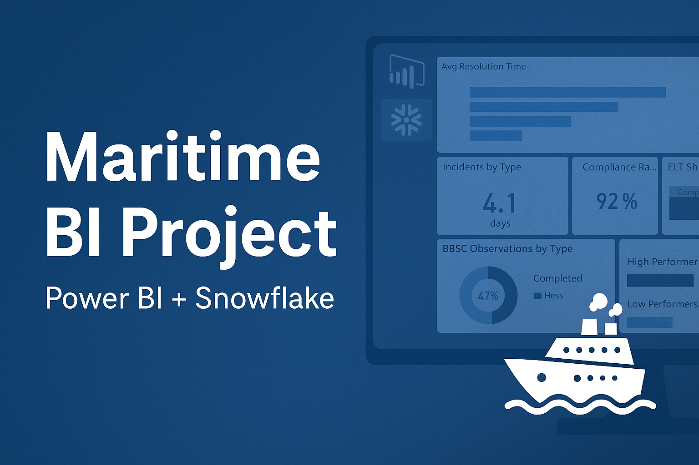

Portfolio Projects

End to End Maritime BI Solution
Project simulates an end-to-end BI solution for maritime safety and compliance reporting.
About Me
I’m a BI Analyst passionate about turning raw data into insights. With experience in education and healthcare sectors, I specialize in Power BI, SQL, Snowflake and Azure.
Get in Touch
Email me at: deepakvasudevanofficial@gmail.com